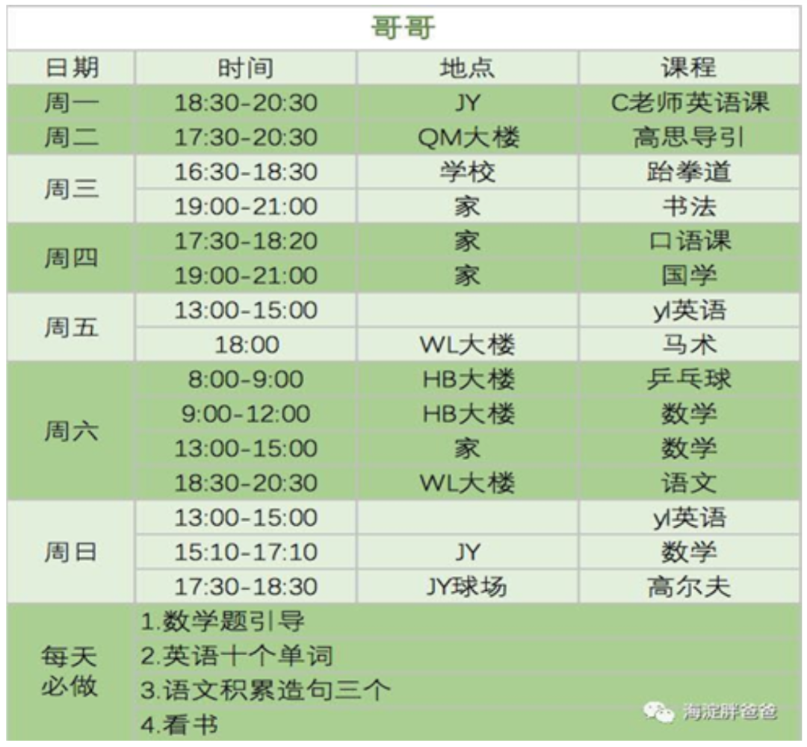

政观书讯丨中产阶层脆弱的巨婴是怎么养成的？
猛萌妈妈
政文观止Poliview
微信号 zhengwenguanzhi
功能介绍 从一群年轻人的视角出发，专业、专注、专解海内外比较政治经济研究的前沿佳作。
__发表于
从幼儿园到大学，教育像一个与世隔绝的保护罩。父母付出了全部心血，却换来脆弱的心灵，巨婴的人格，没有炼成的钢铁。如果这样，我们是否还要过度保护、过度教育我们的孩子？
为从幼儿园开始，孩子们的每一天都要受到父母的严格安排和设计。放学后，不再能自由玩耍，而要参加各种补习班以及其他有人组织并监管的活动，唯一的目的就是要超过其他孩子。
生于互联网时代，大学生却惯于在社交媒体构筑的虚拟世界里寻找意见的共鸣，面对不同的观点和立场，他们往往用举报的方式来消除自己的不安全感。
进入21世纪的第二个十年，美国青少年患抑郁症和焦虑症的比例大幅激增，自杀率呈现急剧上升的趋势。心理焦虑，已经成为大学生寻求心理治疗的首要问题。
与其为孩子铺好路，不如让孩子学会如何走好路。有些善意的保护可能会适得其反，过度保护和过度教育，反而会让我们的孩子成为“脆弱的一代”。这不能简单归咎于父母和教育管理者，更不能归咎于“娇惯”的孩子，全社会应共同反思和努力做出改变。

近日，美国学者格雷格·卢金诺夫乔纳森 · 海特的著作《娇惯的心灵》中译本，由华东师范大学田雷教授等翻译出版，这本书犹如一部“社会科学的侦探小说”，作者抽丝剥茧，回答了“钢铁”是怎么没能炼成的美国故事。对于任何一位关注教育、青少年心理，以及互联网一代的读者都值得一读。
从鲁滨逊到娇惯的绵羊
在《鲁滨逊漂流记》中，鲁滨逊是一名清教徒，他认同1640年的清教革命，当旧制度斯特亚特王朝复辟后，他放弃了家族地产继承权，离家出海。在一个无人荒岛上，鲁滨逊双手劳动，慰籍心灵，重建文明。鲁滨逊的出现是现代性的标志，从此，“自己做主、自己选择、自己负责”的人成为现代个人的模范。
《娇惯的心灵》关注的是，在安全主义的名义下，在“凡是伤害，只会让你更脆弱”“永远相信你的感觉”“生活是好人与坏人之间的战斗”这三种错误观念的指导下，来自学校、家庭和社会的各种过度保护，是如何将独立自主的鲁滨逊养成心灵娇惯的绵羊。
所谓文胜质则史。在这种关注背后，作者隐隐担忧的是，由城市中产价值观所主导的过度教养和保护，会引起自由、好奇和冒险这种美国精神的衰落。而在过去，随着身强力壮的鲁滨逊们在东海岸殖民、西部边疆拓荒，这种个人主义精神逐渐成为美国民族性格的一部分。
在这个意义上，《娇惯的心灵》中隐含的城市与荒野之间的紧张也能够解释，为什么观众总能在各种甜甜腻腻的城市中产剧之外，看到《老无所依》《绝命毒师》《无依之地》这类荒野意象十足的作品。正是来自荒野的鲁滨逊们为这个国家带来了不同于城市资产阶级的精神气质，正是这种精神气质为国家注入源源不断的新的血液。
说到底，《娇惯的心灵》的写作意图是，期望学校、家长和社会放松对孩子的管制，“帮助父母和老师培养出更聪明、更坚强、更独立的孩子”。因为以爱和安全名义下的管制，看似温情脉脉，其实令人窒息，它无助于孩子们成长为自足自洽的鲁滨逊，反而让他们更脆弱、敏感，缺乏韧性。作为一名中国家长，看到《娇惯的心灵》一书作者对孩子的关心，对个人主义精神的社会关怀，心情非常复杂，既羡慕又沉重。
羡慕的是，人家有识之士费心写书，关心孩子成长，并且带着爱意满满地建议：家长要用正确的方式爱孩子，而不是溺爱；同时，这两位作者还关心美国社会里个人主义精神的衰落这种公共问题。沉重的是，部分中国城市中产，不仅以“考试”这根指挥棒的的名义，开展各种铁石心肠的鸡娃，也以安全主义的名义，不遗余力地精耕细作、过度教养。以至于作为旁观者，我总是很困惑：这些家长到底是根本就不爱孩子，还是过度溺爱孩子？
老实说，与中国家长以“考试”名义展开的各种“鸡娃”相比，《娇惯的心灵》中所批评的“斥责”“微冒犯”“不准爬树”“不准使用剪刀”等娇惯，对孩子天性的束缚，真的算不上什么，它顶多是一种儿童友好型的驯服。
如果打开一位北京海淀区孩子的每周课后日程表，你将会看到如下密布的日程：

就这样，孩子的时间被分割了，他们被分配给了各种课程，奔走于各栋大楼。这不是驯服，是规训。驯服让我想到的是，在《小王子》中，小王子像园丁一样悉心呵护他的玫瑰花，但又总被这株娇气的玫瑰花气到不行。对小王子和玫瑰花来说，这段关系固然是羁绊，但还是有爱，很多很多爱。而密密麻麻的日程表，像罗马军营、中世纪修道院、衡水中学……课后日程表是规训，规训里没有爱，只有服从、纪律和秩序，规训永远不知道如何让阳光晒着脸，只知道如何让工作更有效。
因为没有爱，规训者当然不会反思。于是就有了高知、全职、高投入教育的妈妈在知乎匿名分享“我觉得我儿子废掉了”，并将之归因于手机。“在我眼皮底下，孩子一点点成长，四年级钢琴十级，击剑羽毛球游泳航模编程……”“妈妈高需求，孩子就没需求”，在这种“眼皮底下”的网格化管理下，孩子废为沉迷游戏、无欲无求的草食男，不是很合情合理吗？
《娇惯的心灵》中“焦躁不安的父母”一章，作者历数在安全主义文化笼罩下的“直升飞机型家长”“歇斯底里型家长”“风险控制型家长”“无微不至型家长”。为此，他们采访了三位育儿专家，她们都是妈妈。她们的一致结论是，所有这些类型家长的教育方式都让孩子们处处被设限，“他们被剥夺了无人监管的游戏和探险时光。也因此，这一代人就错失了许多挑战、逆境考验以及轻微的危险，但正是经过它们的锻炼，孩子们才会成长，被炼成坚强且独立的人。”其中的道理很简单，如果孩子在成长中不遇到问题，就无法习得解决问题的能力。只有在艰苦卓绝的自我教育中，人才能更聪明、更富有表现力，对周围的世界也更关心。
不过，根据我个人的观察，在精细程度上，美国中产家长是远远比不上中国中产家长的。即使是对互联网世代，我观察到的美国家长的育儿风格普遍都很放松、粗糙。比如喝凉水、穿得少、不吃就算了绝对不喂、满地打滚、脏就脏、爬树、玩水、不垫汗巾、不干预使用纸尿裤……真是百无禁忌，快高长大。我初次看到这种情景，顿时想起自己在八十年代的童年，好像时空交错，在异国公园的拐角处回到了自己童年时的那个小镇。
相反，在育儿这块，中国城市中产家长更追求精细、完美，心态也普遍紧张。比如本人就经历了，妹妹少喝15ml的奶，如同天打雷劈；比如我认识的一位妈妈研究了市场上十几种防晒霜的成分，以确定哪一种对孩子的皮肤伤害最小。不过，在精细教养里，留给孩子自由发挥的空间并不多，相反，它侵入了孩子自我教育、自我成长的空间。如果仔细观察一下，会发现精细育儿养出来的孩子太文，太乖，不够野，少了点进城打工者的二代比如五条人身上的那种随时随地就能抄起家伙，活下去的劲儿。《娇惯的心灵》中也讲到了，在父母教养方式上，社会阶层之间的差异，工人阶级家庭只能自然放养，中产家庭精细教养。从社会进步的角度看，这种差异和差距也不是好事。
其实和课后日程表一样，打着“我也是为了你好”旗号的精细教养，本质上也是一种规训，一种“洞幽入微的青蝇之眼”般的密不透风的规训。虽然这么说有点冒犯，但是，我还是想说，热爱使用这种规训的人往往心智并不成熟，心态不够放松，他无法接受不可控的世界，害怕风险，不能忍受不确定性和复杂性。于是，为了消灭无处不在的风险，他总是极度用力，随时准备灭火。
但是，孩子也是个小人儿，他们有自己的注意——即使不对。因此，养孩子这件事本身就是事件层出不穷，并且这些事件根本无法控制和根除，比如突然胡闹一场，不摆好鞋子不进门，绝不吃青椒，只要穿放进洗衣机里那件衣服……要是致力于控制这些事件，能耗太高，产出往往不成比例。这就是为什么，很多新手妈妈常常在竭尽全力、内疚自责与精神崩溃之间反反复复。
在这个意义上，接受不确定性和复杂性，适度的自然放养不仅是给孩子留白，也解放了自己。可见，在包括教育在内的任何一段关系中，给彼此留白与空闲对保护自己和对方的元气多么重要。做家长的，如果没想明白世界是什么样的，没想明白自己能做什么、对方能做什么，就很难拥抱自己，拥抱孩子，拥抱不确定性，就很容易被盲目的主流一会儿卷到东边，一会儿卷到西边，疲于奔命，焦虑不安。
作为中国家长，我在读《娇惯的心灵》的时候，总是联系自己的处境。当我带着这个目的去读书，难免心情沉重，少了很多乐趣。不过，我还是想讲讲这本书里我最亲近、最喜欢的一部分——第九章对游戏和玩耍的讨论。游戏和玩耍是孩子的天性。对孩子们说，游戏和玩耍不是为下次更好的学习积攒力量，游戏和玩耍就是游戏和玩耍，是他们生活的一部分。智人本来就是在树上晃来晃去的猴子，就算他们下到草原，学会使用火，走出非洲，去到月亮和火星了，他们的基因还是会向往童年时代的游戏和玩耍。就像五条人在《世界的理想》中唱的，请你不要再唱那些无聊的歌谣，人类从来没有厌倦了像猴子那样咿咿呀呀乱喊乱叫。
编辑：郭静远